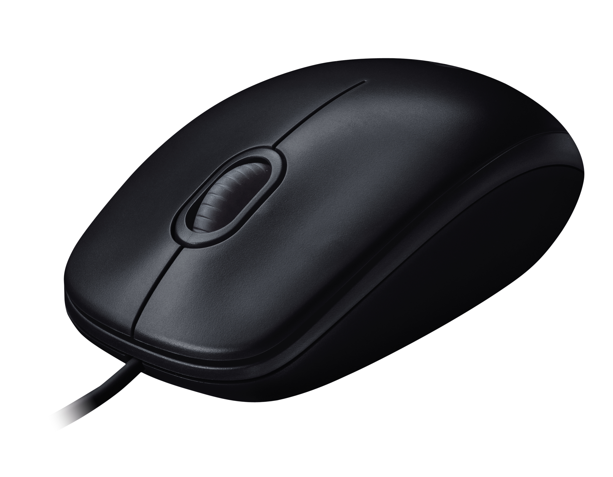

Iedereen gebruikt weleens een computermuis, maar weten we wel hoe ze werken en waar ze vandaan komen? Op onze website gaan we je van
alles vertellen over muizen. We gaan de geschiedenis uitgebreid behandel en gaan je vertellen hoe een muis gemaakt word. we gaan vertellen
over verschillende soorten muizen en over de werking van de muis, want al is een muis enkel en alleen een bijvoegsel van een computer of
een laptop, er zit een verhaal en een geschiedenis aan vast. Het is een prachtig stukje technologie en ik hoop dat jij na het lezen van
onze website er ook zo over zult denken.
Wat is een computermuis? Een computermuis is een aanwijsapparaat die mensen gebruiken om de computer makkelijker te kunnen gebruiken,
er zijn verschillende soorten computermuizen: Mechanische muis, Optische muis, Trackball, Pen-tablet, Penmuis en nog velen anderen. de
meest voorkomende computermuis zijn de mechanische en de optische muis. De meeste computermuizen zijn gemaakt voor rechtshandige maar
er bestaan ook computermuizen voor linkshandige zodat hun hand er makkelijker op ligt en ze niet zitten te vervelen op de manier
waarop hun hand er op ligt. sommige mensen gebruiken draadloze computermuizen op hun computer, deze muizen hebben een usb gedeelte die
altijd verbonden in met de muis en die je in je computer stopt en die je meestal ,als je het handiger vind als je laptop meeneemt, in
de muis kunt te stoppen en werkt op batterijen. In de meestal gevallen werkt een muis op AAA batterijen. De normale muis heeft een
draad eraan die je in de computer of laptop stopt en je niet elke keer de batterijen moet vervangen, maar dan heb je meer gedoe met het
draadje aan de muis tijdens het gebruiken van de muis.
Hoe werkt een computermuis? De klassieke muis werkt met zogenaamde digitizers: een balletje beweegt een wiel in de X en de Y as (dus naar voren en opzij). Dit wiel heeft een groot aantal gaatjes, waar licht (meestal infrarood) doorheen schijnt en opgevangen wordt door een lichtgevoelige diode (een electrisch onderdeeltje). Als het balletje het wiel beweegt, wordt het licht steeds onderbroken en 'weet' de muis dat er beweging in de muis zit. Deze beweging wordt doorgegeven aan de computer, die de cursor corresponderende bewegingen laat uitvoeren. De meeste draadloze muizen gebruiken radio frequentie technologie om informatie naar de computer te verzenden. Radio frequentie technologie klinkt erg ingewikkeld. Maar het is eigenlijk te vergelijken met een radio. Er is een zender en een ontvanger nodig. Zo werkt het:- De zender zit in de muis. Dat zendt een electromagnetisch (radio) signaal uit. Dat signaal geeft aan de computer door dat er geklikt wordt op bepaalde knoppen of dat de muis op een bepaalde manier wordt bewogen.- De ontvanger van het signaal zit in de computer. De ontvanger geeft de signalen weer door aan de computer en de software (programma's) die op dat moment worden gebruikt.- De ontvanger kan er verschillend uitzien. Het kan bijvoorbeeld een speciaal kaartje zijn dat in de computer wordt gebouwd. Of dat het een apart apparaatje is dat je in je computer kan pluggen. Wist je dat bij een mobiele telefoon dezelfde technologie wordt gebruikt?
